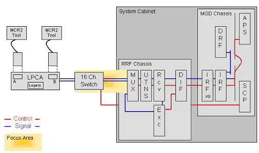
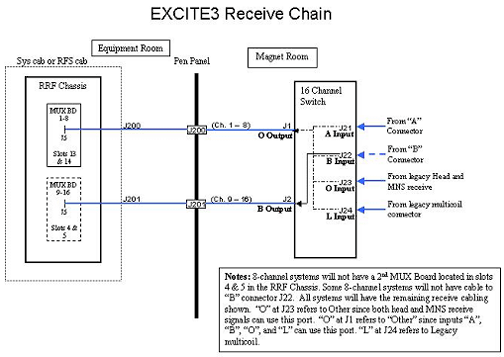
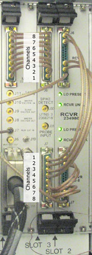

Proprietary to General Electric Company
Direction 5440000, Rev# 5
Signa HDxt Service Methods
Module Version 1.0, Version Date 4/26/07
Proprietary to General Electric Company |
Diagnostics >> RRF Chassis >> UTNS Bypass Functional Diagnostics
The purpose of the UTNS Bypass Diagnostic is to isolate problems within the MUX, UTNS, and Receiver board signal path.
The System Cabinet Loopback diagnostic should be performed prior to running this test.
Prior to running the diagnostic, a bypass is wired so the signal path from the MUX to UTNS and UTNS to receiver is modified by connecting problematic channel directly from the MUX to the receiver. If the problem remains after running the test, the UTNS is eliminated as a possible problem source. If the problem is eliminated, the UTNS, or cables carrying signal to or from the UTNS are the problem source.
| ||||
| The UTNS Bypass diagnostic should not be performed prior to running the Sys Cab Loopback Diagnostic and 16-channel Switch Diagnostic. | ||||
Receive Chain (MUX, UTNS, Receiver boards)
UTNS
MUX Board & Receiver board
Cabling & Hardware from the 16-channel Switch to the Mux Boards
No coils shall be connected to the LPCA.
MCR III tool is required for testing.
Illustration 1: UTNS Bypass Diagnostic Block Diagram

Illustration 2: Excite 3 Receive Chain Block Diagram

Use Table 1 below to determine the location of the UTNS board you want to test.
Disconnect the cable harnesses attached to J6 and J7 of the UTNS board and attach them to each other.
| NOTE: | If the cables are too short for the harnesses to be easily attached,
use an SMB to Coax Receptacle (part number 5117298,
found in the cable kit) to jump individual channels between those two cable
harnesses. Make sure to match channels when jumping cables (see below).  |
On the Diagnostic interface, select the channels that were wired together.
Click [Run].
Examine the results and take the appropriate action. For assistance with analyzing the results, see Illustration 3, Illustration 4, Illustration 5, and Illustration 6.
| NOTE: | Because values for this test can vary widely from system to system, benchmarks are specific to your system type. When a test fails, therefore, the log will indicate the tolerance level for the failed test. |
Table 1: Determining UTNS Board
| Channels | RRF Chassis | Slot |
| 1-8 | 1 | 12 |
| 9-16 | 1 | 3 |
| 17-24 | 2 | 12 |
| 25-32 | 2 | 3 |
Illustration 3: Channel Data

Illustration 4: Summary File

Illustration 5: Basic Statistics

Illustration 6: Typical Output

When executed in conjunction with the 16-channel Switch diagnostic, system problems can be isolated to
the signal source – the exciter
the RRF Chassis’ receive chain – the MUX, UTNS, and receiver boards
outside the system cabinet
Table 2: Solution Table
| Sys CabLoopback | 16-channel Switch | Results/Action |
|---|---|---|
| Failed | Failed | Problem within the RRF Chassis. Isolate the receive chain. |
| Failed | Passed | Problem with signal source for the Sys Cab Loopback. Check the exciter, cabling, and possible RF Chassis hardware such as power, backplane, etc. |
| Passed | Failed | Problem isolated to the 16-channel Switch, passive components back to the RRF Chassis, or possibly a bad Mux board.4 |
| Passed | Passed | Receive chain from the 16-channel Switch appears to be functioning. Run the Multi-coil Receive diagnostic to examine the signal path from the LPCA to the 16-channel Switch. |
Table 3: Fault Table
| Fault | Problem Description | GE Field Action |
|---|---|---|
| none | If a fault is known to exist, subsequent areas to investigate are:
|
|